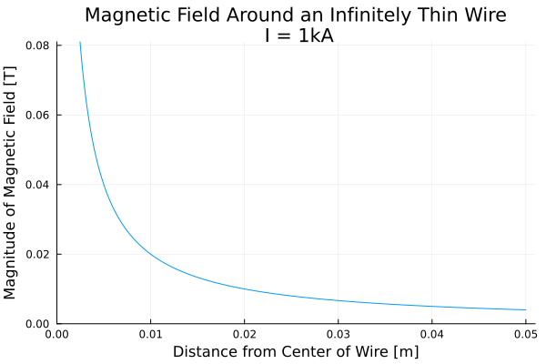
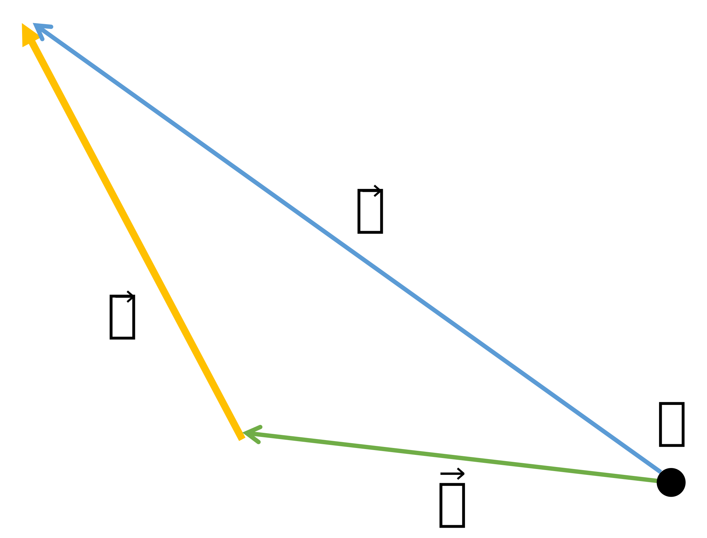

Theory
Theory manual for Wired.jl
Basics
Unit System
All units are MKS:
- Length in
meters - Electric current in
amperes - Magnetic flux density in
Tesla
Coordinate System
Wired.jl uses a global Cartesian coordinate system. It does not currently support coordinate system conversions, or cylindrical, spherical, or toroidal systems.
For current-carrying Ring objects, the primary axis of the ring is the Z axis.
The Biot-Savart Law
The Biot-Savart Law is a fundamental equation of magnetostatics, and analytically determines the magnetic field generated by a constant electric current traveling along a path in 3D space. Because it is analytical, it can be very useful in accurately calculating the effects of complicated arrangements of currents in 3D space, by breaking down the larger problem into smaller pieces.
Wikipedia has a much better description than provided here, but the core equation is a line integral:
\[ \overrightarrow{B}(r) = \frac{\mu_0}{4\pi} \int_C{\frac{I dl \times r' }{|r'|^3}}\]
- $r$ is the location in 3D space at which the field is being computed
- $\mu_0$ is the magnetic permeability of vacuum - free space (magnetic fields within materials may vary considerably)
- $I$ is the current flowing along the path
- $dl$ is a differential vector along the path
- $l$ is a point on the path, such that $r' = r - l$
For input units in amps [A] and meters [m], the constant $\mu_0=4\pi \times 10^-7$ [H/m] and $\overrightarrow{B}$ is in Tesla [T].
Magnetic Field Around a Current-Carrying Wire
Infinitely Thin Wire
For the case of an infinitely thin wire, this equation simplies greatly into the common scalar form:
\[B(r) = \frac{\mu_0 I}{2 \pi r} \]
This equation computes the magnitude of the magnetic field, which is oriented tangent to a circle around the wire axis and perpendicular to the current path.

Note that the equation has a singularity at radius $r=0$ and predicts infinite magnetic field at the center of the wire. Real conductors have finite cross-section and do not generate infinite magnetic fields. Also note that the magnetic field decays very quickly as the observation point moves further away from the current.
For more discussion see the Hyperphysics Textbook.
Circular Solid Conductor
Inside a solid conductor, the magnetic field is bounded, and is in fact zero on the axis. It is also now a function of the magnetic permeability, `\mu\`, of the material that the current is travelling through. For some materials, like copper, this value is close to that of free space, but for others, it can vary significantly.
\[B(r) = \frac{\mu I r}{2 \pi R^2}\]
Outside the conductor, the calculation of the field is exactly the same.

Notice the difference between the graph and the previous: the maximum value of the field is on the surface of the conductor and has a finite value. Also, the field decays incredibly quickly: just 50mm (2") away from the center of the conductor, the field has decayed to less than 1/8 of its maximum value.
Finite Length Wires
For simple, straight wires in 2D space, the Biot-Savart law is quite straightforward and has limited applicability. However, it can be even more useful in determining the magnetic fields generated by complex arrangements of current-carrying wires by splitting the problem up into many small wires.
The purpose of Wired.jl is to integrate the Biot-Savart law over a large number of outpoint points called nodes. In this case, the current sources are discrete wires of a finite length, and an analytical solution is employed.

If $P$ is an arbitrary point in 3D space, and $\vec{a}$ is a wire segment carrying current $I$, then let $\vec{b}$ and $\vec{c}$ be vectors from $P$ to the start and end points of $\vec{a}$. Assuming $P$ is in free space, then the magnetic flux density at $P$ is given by:
\[\overrightarrow{B} = \frac{I \cdot \mu_{0}}{4 \pi} \cdot \left( \frac{\overrightarrow{a} \cdot \overrightarrow{c}}{|\overrightarrow{c}|} - \frac{\overrightarrow{a} \cdot \overrightarrow{b}}{|\overrightarrow{b}|} \right) \cdot \frac{\overrightarrow{c}\times\overrightarrow{a}}{ {|\overrightarrow{c} \times\overrightarrow{a}|}^2}\]
If there are many current sources and many output locations at which to observe the magnetic field, then this equation can be numerically integrated for all of them. This vector analytical solution corresponds to the infinitely thin wire scalar solution.
Current Density Correction
For node points within the radius of the solid conductor, this equation is multiplied by the following ratio:
\[J_{correction} = \frac{{r_o}^2}{{r}^2}\]
where $r_o = \frac{|\vec{c} \times \vec{a}|}{|a|}$ is the shortest distance from the node to the centerline of the Wire, and $r$ is the finite radius of the Wire cross-section.
Current-Carrying Circular Ring
Reference: Simple Analytic Expressions for the Magnetic Field of a Current-Carrying Loop
Similarly, the magnetic field generated by a current traveling in a loop can be expressed analytically. This is especially useful for solenoids such as those in electric motors. The equations are more involved.
Given a current-carrying ring with finite circular cross-section and the following parameters:
- Height above the
XYplane $H$ - Major radius $R$
- Minor radius $a$ (cross-section radius)
- Electric current $I$
the magnetic flux density at location $(x,y,z)$ can be calculated.
Intermediate variables:
- $\rho^2 = x^2 + y^2$
- $r^2 = x^2 + y^2 + z^2$
- $\alpha^2 = R^2 + r^2 - 2 \space R \space \rho$
- $\beta^2 = R^2 + r^2 + 2 \space R \space \rho$
- $k^2 = 1 - \alpha^2 / \beta^2$
- $C = \mu_0 \space I / \pi$
Elliptic integrals:
- Complete elliptic integral of the first kind $K(k)$
- Complete elliptic integral of the second kind $E(k)$
The magnetic flux density components:
\[\begin{aligned} \vec{B_x}(x,y,z) = \frac{C \space x \space z}{2\alpha^2 \space \beta \space \rho^2} \left[ \left( \alpha^2 + r^2 \right) \space E(k^2) - \alpha^2 K(k^2) \right] \\ \vec{B_y}(x,y,z) = \frac{y}{x} \space |B_x| \\ \vec{B_z}(x,y,z) = \frac{C}{2\alpha^2 \space \beta} \left[ \left( \alpha^2 - r^2 \right) \space E(k^2) + \alpha^2 K(k^2) \right] \end{aligned}\]
Current Density Correction
A similar current density correction is applied to $(x,y,z)$ locations that fall within the minor radius of the ring:
\[J_{correction} = \frac{\alpha^2}{a^2}\]
However, note that in this case, the result is an approximation. See Validation for more details.
Finite Element Meshes
Converting Mesh to Wire Objects
Other Routines
Treatment of Numerical Singularities
For certain situations (such as the $\vec{B_x}$ and $\vec{B_y}$ components of the magnetic field at the center of a ring), the analytical solution has a numerical singularity: it diverges to $\infty$.
Wired.jl converts all singularities to the value of 0.0.